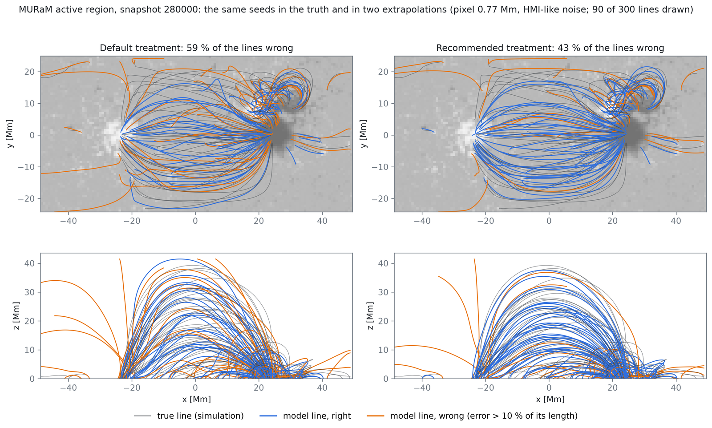
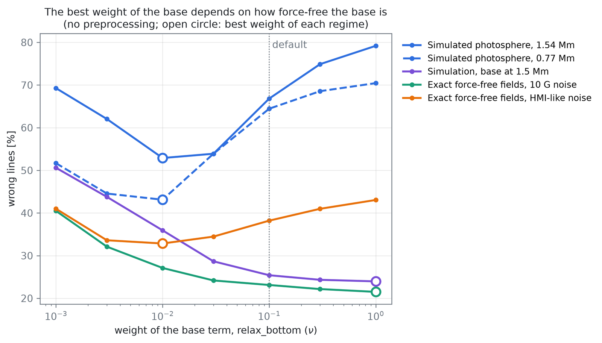

Tests against simulations¶
The per-line confidence of this library is calibrated on exact force-free fields. This page reports what happens when the truth is a radiative MHD simulation, whose photosphere is not force-free.
Main result
Against a simulated active region, 62 % of the lines of the default extrapolation are wrong and the published confidence does not separate them: 51 % of the accepted lines are wrong. For real magnetograms, do not read the confidence as an error probability.
The treatment of the base changes the result more than anything else tested here. A configuration that trusts the base less is recommended below for photospheric magnetograms.
How the tests were made¶
The simulations used as the truth. Simulation: the name of the run in the catalogue. Code: the MHD code that produced it. What it is: the solar region it represents. Reference: the paper that describes it.
| Simulation | Code | What it is | Reference |
|---|---|---|---|
ar098192 |
MURaM | active region with a flare | Cheung et al. (2019) |
qs024048_by3363 |
Bifrost | flux emergence | Hansteen et al. (2017) |
en024048_hion |
Bifrost | enhanced network | Carlsson et al. (2016) |
- The three are public cubes of the Oslo catalogue.
solarff.simulations.reduced_fielddownloads a snapshot and reduces it to the grid of the extrapolation. - The magnetogram is the field of the simulation at the base, with the three noise models of the calibration. The active region is used with pixels of 1.54 and 0.77 Mm.
- The lines of the model and of the simulation are traced from the same seeds. A line is wrong by the definition of the calibration: mean distance above 10 % of the length, or a change between open and closed. Some results are also given with 20 %.
- The criteria of every test were written down before running it, and the final tests use snapshots that had not been opened before.
What a wrong line looks like¶

One case of the final test, on a snapshot never used before: pixel 0.77 Mm and HMI-like noise. The true lines of the simulation are grey; each model line traced from the same seed is blue if it follows the true one and orange if it is wrong. Top, seen from above; bottom, from the side. With the default treatment of the base 59 % of the 300 lines are wrong, with the recommended one 43 %. The default model makes many loops too high and opens lines that are closed in the simulation. 90 lines are drawn; the percentages count all 300.
examples/46_simulation_figures.py draws the two figures of this page. A version at 300 dpi is
written to docs/informes/simulations/.
The calibrated confidence does not hold¶
Eighteen extrapolations of the simulated active region (three snapshots, two pixels, three noise models, 5397 lines), with the default settings and the published coefficients, nothing refitted:
The published confidence in the calibration suite and against the simulated active region. Rows: the fraction of wrong lines, the fraction accepted by the confidence, and the fraction of wrong lines among the accepted, with its interval in brackets.
| Calibration suite | Simulated active region | |
|---|---|---|
| Wrong lines | 29 % | 62 % |
| Lines accepted (confidence ≥ 0.8) | 51 % | 36 % |
| Wrong among the accepted | 4.4 % | 51 % (45 to 56) |
- The confidence barely ranks the lines there: AUC 0.61.
CWsinof these models is 0.22 to 0.26, just above the range of the calibration, so the range check of the confidence page does flag them. Passing that check remains necessary, not sufficient.- The simulation loses 8 % of its free energy across the flare. The models do not reproduce the drop: their free energy changes by 0 to +8 % with the 0.77 Mm pixel and by +14 to +22 % with the 1.54 Mm pixel.
- In the two Bifrost runs, which contain no active region, 93 and 97 % of the NLFFF lines are wrong. In the network run the potential field does better than the NLFFF (67 % wrong).
What still ranks the lines¶
The distance between the NLFFF line and the potential line traced from the same seed,
potential_departure, ranks the wrong lines. It was found on the MURaM run and then tested on the
two Bifrost runs, where it reaches AUC 0.82 and 0.95 on its own.
r = sff.rank_lines(nl, lines, mag=mag)
r["order"] # indices of the lines, from the most to the least reliable
r["percentile"] # 0 for the most reliable line of this model, 1 for the least
rank_linesuses six terms fitted on the simulations (solarff.confidence.CALIBRATION_MHD). It returns an order and no threshold, andassess_linesrefuses that calibration.- A ranking of this kind, refitted for the recommended configuration on older snapshots, holds on
three unused snapshots. With the 20 % definition the AUC is 0.81 and 0.76 for the two pixels, and
the best third of the lines is 3.7 and 6.3 % wrong against 24.6 and 22.4 % overall. Its
coefficients are in
docs/resultados/base_weight_regimes.json. - It is not confirmed on real data. In three observed regions the best-ranked lines do not follow the AIA loops better once the height of the lines is taken into account.
The height of the base¶
With the same cases and the base taken 1.5 Mm above the photosphere, where the field is closer to
force-free, the wrong lines of the NLFFF fall from 62 % to 29 % (40 % with the 1.54 Mm pixel, 17 %
with 0.77 Mm). The potential field stays at 71 %. reduced_field(..., z0=1.5) gives that base.
The published confidence still fails there (AUC 0.55).
Recommended treatment of a photospheric base¶
The two treatments of the base compared on this page. mu3, mu4: weights of the distance to the data and of the smoothing in preprocess. relax_bottom: weight of the base term in nlfff_lbfgs.
mu3 |
mu4 |
relax_bottom |
|
|---|---|---|---|
| Default | 10⁻² | 10⁻² | 10⁻¹ |
| Recommended for photospheric magnetograms | 10⁻¹ | 10⁻² | 10⁻² |
pp = sff.preprocess(mag, mu3=1e-1, mu4=1e-2) # less smoothing
nl = sff.nlfff_lbfgs(pp, nz=48, relax_bottom=1e-2) # a base that is trusted less
Wrong lines at the simulated photosphere, on three snapshots never used before:
Wrong lines with each treatment, on snapshots never used before. Pixel: size of the cell and definition of a wrong line (error above 10 % or 20 % of its length). Default and Recommended: fraction of wrong lines. Difference in points: recommended minus default, with its interval and the number of cases in which it falls.
| Pixel | Default | Recommended | Difference in points |
|---|---|---|---|
| 1.54 Mm, 10 % definition | 64.4 % | 47.9 % | −16.5 (−19.1 to −13.8), nine of nine cases |
| 0.77 Mm, 10 % definition | 60.8 % | 44.9 % | −15.9 (−17.3 to −13.7), three of three cases |
| 1.54 Mm, 20 % definition | 35.7 % | 24.6 % | −11.1 |
| 0.77 Mm, 20 % definition | 31.9 % | 22.4 % | −9.4 |
- It has a cost on exact force-free fields. On the ten analytical families the wrong lines rise from 40.2 to 42.0 % (+1.7 points, 0.6 to 2.8). The published confidence keeps its ranking there (AUC 0.908 to 0.903) and accepts 7.8 % of wrong lines instead of 5.8 %.
- Less smoothing alone (
mu310⁻¹, the rest at the defaults) costs nothing on the analytical families (−0.7 points) and gives part of the gain at the simulated photosphere: 62.9 to 52.8 %. - The defaults of the library are unchanged, because the confidence was calibrated with them.
How much to trust the base¶
relax_bottom is the weight \(\nu\) of the term that ties the transverse field of the base to the
data. In a scan of that weight alone, without preprocessing, on snapshots and noise never used
before, the best weight depends on how force-free the base is:

Each curve is a regime of the test; the open circle is its best weight and the dotted line the default. At the simulated photosphere the best weight is 0.01; with a base that is closer to force-free, it is 1.
Wrong lines with two weights of the base term, without preprocessing. Base: the regime of the test. \(\nu = 1\) and \(\nu = 0.01\): fraction of wrong lines with each weight.
| Base | \(\nu = 1\) | \(\nu = 0.01\) |
|---|---|---|
| Simulated photosphere, 1.54 Mm | 79.2 % | 52.9 % |
| Simulated photosphere, 0.77 Mm | 70.4 % | 43.1 % |
| Simulation at 1.5 Mm height, 1.54 Mm | 24.0 % | 35.9 % |
| Exact force-free families, 10 G noise | 21.5 % | 27.1 % |
| Exact force-free families, HMI-like noise | 43.1 % | 32.8 % |
- A forced base or a noisy one asks for a small weight. A clean force-free base asks for a large one. With the base at 1.5 Mm and the 0.77 Mm pixel the difference is small (3.4 points), below the bar set in advance.
- A rule of thumb. Run once with \(\nu = 0.1\), take the misfit \(D\) =
nl.meta["L_data"] / 0.1, and use \(\nu = 10^{-5.4}/D\) limited to 0.001 to 1. Over all the regimes it is on average 3.7 points from the best weight of each case, against 4.1 for a fixed 0.03. It is no more than a rule of thumb: at the simulated photosphere with the 0.77 Mm pixel it loses 13.8 points. - Where the error comes from. With the true field of the simulation on the side and top faces, which is a diagnostic and not a method, the wrong lines fall from 52.9 to 41.7 %. With a fixed base they stay at 64 to 67 % whatever the faces. At the simulated photosphere the forced base limits the lines more than the unobserved faces.
Observed regions against AIA loops¶
The recommended configuration was applied to three observed regions and compared with the default one, line by line, through the angle between each projected line and the loops seen by AIA (negative is better):
Recommended minus default treatment in three observed regions, measured by the angle between each projected line and the AIA loops. Region: the active region. Mean difference in degrees: mean over the lines, with its interval; negative means the recommended lines follow the loops better. Median: the median of the same differences.
| Region | Mean difference in degrees | Median |
|---|---|---|
| NOAA 11158 | −1.06 (−2.57 to +0.36) | +0.45 |
| NOAA 11429 | −0.54 (−2.25 to +1.22) | +0.14 |
| NOAA 12673 | −3.31 (−4.54 to −2.10) | −3.38 |
| Combined | −1.97 (−2.78 to −1.16) |
The three regions point the same way, but only NOAA 12673 excludes zero on its own, and in the other two the typical line does not move: the gain is a tail of lines.
What an image of loops can say¶
The same angle was measured in the simulation against synthetic loops, which are true lines seen from above. With an image of 60 loops:
- The angle follows the truth. Between the recommended and the default model the difference is −1.43° (−2.33 to −0.56), for 17 points fewer wrong lines. Between two equally good models it is −0.06°.
- The angle flags wrong lines of one model. The worst-aligned quarter of the lines is 82 % wrong, the best-aligned half 33 to 38 %.
- It does not choose between models. Taking for each seed the best-aligned line of seven models is worse than the recommended model alone (56.0 against 51.2 % wrong), because some candidate always aligns by chance.
- With a crowded image of 300 loops the difference between the two models is not seen (+0.07°).
Limits of these tests¶
- One simulated active region. The snapshots belong to the same run and do not count as independent regions.
- Coarse pixels. 1.54 and 0.77 Mm, coarser than the simulation and than HMI.
- One code. The figures are those of the solver of this library.
- Earlier work. Metcalf et al. (2008) compared extrapolations from simulated photospheric and chromospheric fields, DeRosa et al. (2009) assessed NLFFF models of an observed region, Fleishman et al. (2017) tested reconstruction tools against a Bifrost model, and Zhu & Wiegelmann (2019) tested a magnetohydrostatic extrapolation against a radiative MHD simulation of a flare. These tests add the count of wrong lines, line by line.
Scripts and result files¶
Every script writes the file listed next to it in docs/resultados/.
The scripts of these tests. Script: the file in examples/. Purpose: what it tests. Result file: the file in docs/resultados/ where it writes its numbers.
| Script | Purpose | Result file |
|---|---|---|
33_mhd_truth.py |
the published confidence against the simulated active region | mhd_truth.json |
34_mhd_indicators.py |
other indicators on the same cases | mhd_indicators.json |
35_realistic_truths.py |
the two Bifrost runs and the departure from the potential line | realistic_truths.json |
36_mixed_model.py |
one model fitted on analytical and simulated truths together | mixed_model.json |
37_realistic_choice.py |
error level from the signal-to-noise, and a choice between the NLFFF and the potential line | realistic_choice.json |
38_rank_real_regions.py |
the ranking in the three observed regions | rank_real_regions.json |
39_chromospheric_base.py |
the base at 1.5 Mm | chromospheric_base.json |
40_base_treatment.py |
scan of the preprocessing weights and of the weight of the base | base_treatment.json |
41_base_treatment_analytic.py |
the recommended configuration on the analytical families | base_treatment_analytic.json |
42_base_treatment_factorial.py |
the two changes taken apart | base_treatment_factorial.json |
43_base_weight_regimes.py |
the weight of the base in each regime, the rule of thumb, the true faces and the ranking, on unused snapshots | base_weight_regimes.json |
44_recommended_regions_aia.py |
the recommended configuration in three observed regions against AIA | recommended_regions_aia.json |
45_loops_as_measurement.py |
synthetic loops as a measurement | loops_as_measurement.json |
The scripts need the raw cubes of the simulations, which are large and are downloaded from the catalogue on first use.